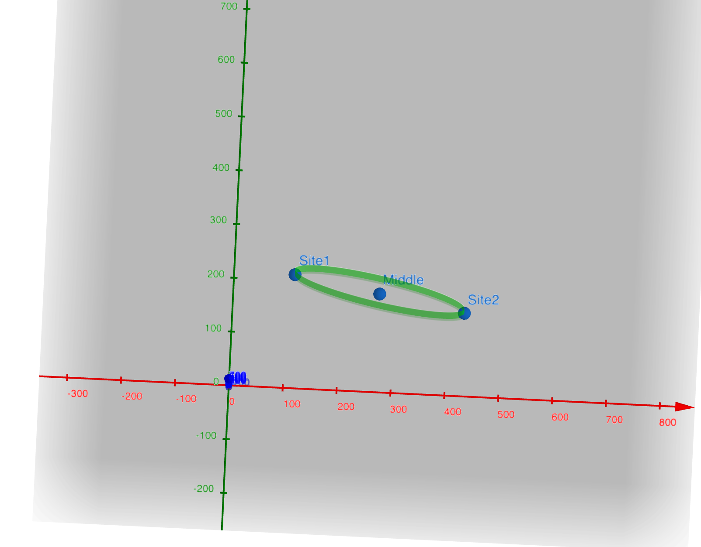
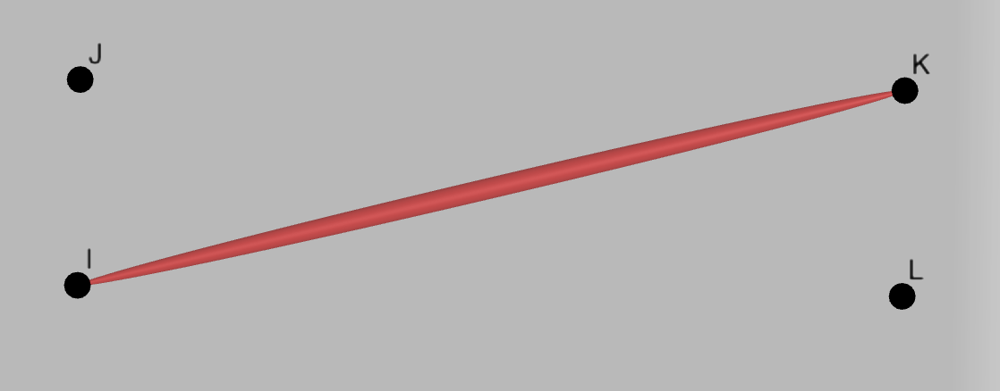
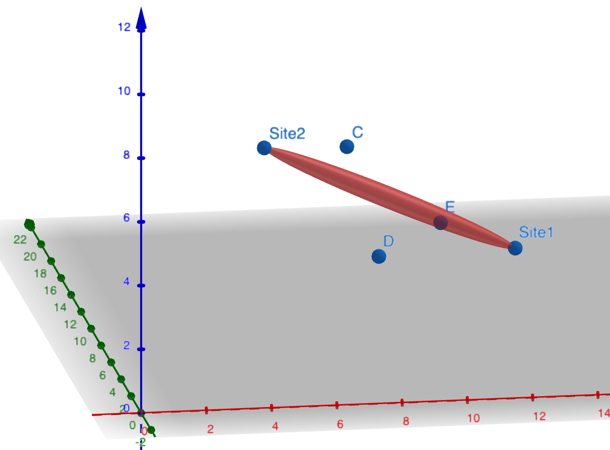

Ellipsoidal Model
The ellipsoidal model is more practical and theoretically more accurate than the cylindrical model when the data resolution is better, but usually costs more time to compute. The core concept of the ellipsoidal model is the Fresnel zone. With the ellipsoidal model, the radius is non-uniform and become largest at the center, which is called Fresnel radius. The Fresnel radius here is computed based on the frequency, rather than inputed by user.
TLDR of a Fresnel zone from the Wiki:
Although intuitively, clear line-of-sight between transmitter and receiver may seem to be all that is required for a strong antenna system, but because of the complex nature of radio waves, obstructions within the first Fresnel zone can cause significant weakness, even if those obstructions are not blocking the apparent line-of-sight signal path. For this reason, it is valuable to do a calculation of the size of the 1st, or primary, Fresnel zone for a given antenna system. Doing this will enable the antenna installer to decide if an obstacle, such as a tree, is going to make a significant impact on signal strength.
Example Fresnel Zone between two sites:

Problem Modeling
We will use a 2D ellipse on the plane and a 3D ellipsoid. The 2D ellipse is used to filter out all obstructions that are not within the 2D projection of the Fresnel Zone. The 3D ellipsoid is used to check if the obstruction’s height interferes with the Fresnel Zone.
Code is in los/frensel_zone.py
and los/ellipsoidal_los_validators.py
Useful tools for visualization
- https://www.geogebra.org/calculator - 3D ellipsoid
- https://www.desmos.com/calculator - 2D ellipse
Ellipse and Ellipsoidal
- We create a 2D ellipse on the plane with the two sites as the end points.
- (Red is x-axis, Green is y-axis, Blue is z-axis). In reality, the Fresnel radius is much smaller, but it’s enlarged here for visualization
- We also create a 3D ellipsoid with the two sites as the endpoints

Mathematical Formulation
Given two sites Site 1:, Site 2:
To calculate the maximum radius of the first Fresnel zone, we use this equation from the wiki
- D=(x2−x1)2+(y2−y1)2+(z2−z1)2. UTM is in meters
Equation for 2D ellipse on the plane:
where
- are the offsets from origin to the midpoint of the ellipse
- Angle is the is the angle between the -axis and the line which goes through both sites
- is the 2D euclidean distance from a site to the midpoint
- is the Fresnel Radius
To check if a point is inside the ellipse, we just need to evaluate the ellipse equation. if the result , it is inside the ellipse otherwise it is outside.
Equation for 3D ellipsoid: The standard equation of an ellipsoid that is not rotated and at the origin is
where
- is the 3D euclidean distance from a site to the midpoint
- and are both equal to the Fresnel Radius
We need to find a rotated ellipsoid that is not at the origin.
- We use 3D rotational matrices. We perform intrinsic rotations first on
-axis with angle , then -axis with angle then -axis with
angle
- intrinsic means the rotation is always based on the rotating coordinate system
- The three rotational matrices are
- Using a right handed coordinate system.
We want a positive angle to rotate from postive -axis to positive
-axis, a positive angle to rotate from postive -axis to positive
-axis, and a positive angle to rotate from postive -axis to
positive -axis
- We get , then we plug , and into the standard ellipsoid equation
- Since and are both equal to the Fresnel Radius, Angle (around the -axis) will not have an impact since it is a sphere on the plane. We can simplify the equation with
- Final 3D ellipsoid equation is
Where angle is the first rotation around the -axis, calculated using
Angle is the second rotation around the -axis applied after the first rotation, calculated by
To find the two heights on the ellipsoid for a point(,), we rearrange the ellipsoid equation for variable into standard quadratic form , then get
where,
We get the two heights by using this numericaly stable method to solve for roots and adding offset . If there’s no roots, then it’s obviously that the LOS is clear. To compute the confidence level, we only care about the higher intersection. If it’s higher than
max_top_view_plane, which is described in the section of Cylindrical Model, we compute the confidence level with the 3D ellipsoid equation; otherwise, the 2D ellipse is used because the closest obstruction is on themax_top_view_plane.
Steps to Decide LOS
We create a rectangular bounding box around the ellipse. Points define the bounding rectangle surrounding the ellipse region
We scan through a rectangular area on the DSM that cover the ellipse and obtain all the
potential_obstructionsFor each potential obstruction, we first check if it is inside the ellipse.
For example Here point and will get filtered out because they are not within the 2D projection, but points ,, may still be an obstruction

For all the obstructions inside the ellipse, we then use the 3D ellipsoid to check if the obstruction’s height interferes with the Fresnel Zone. With DSM data, we only have coordinate with being the highest point on the object therefore. Then an obstruction interferes with the Fresnel Zone if the height is within or greater than the ellipsoid
For example, here point and is an obstruction because it is within/above the Fresnel Zone but point is not an obstruction since it is below the Fresnel Zone.
